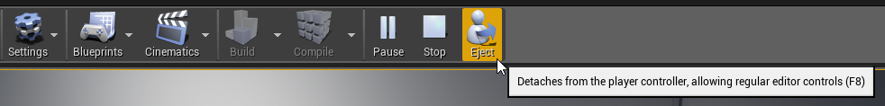
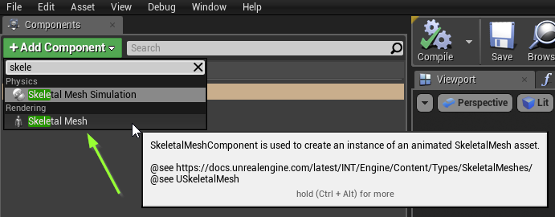
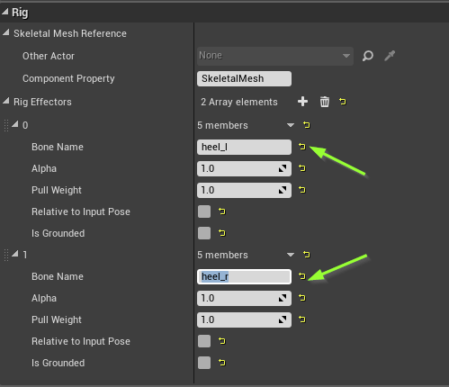
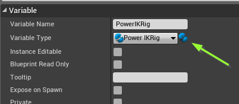
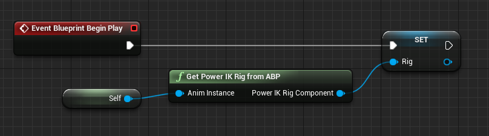
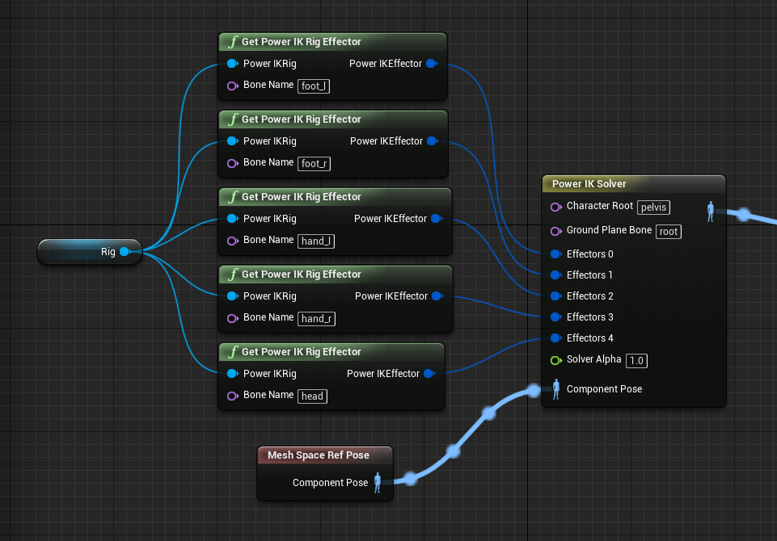
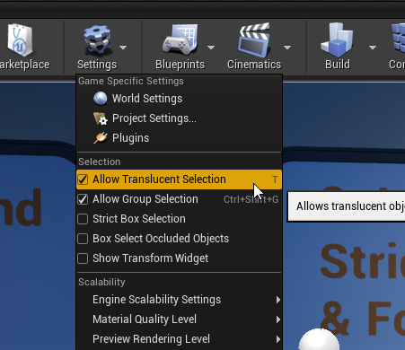

Power IK Interactive Rig
It is sometimes helpful to have an interactive rig with effectors that you can push and pull with your mouse. This is useful for testing your skeletons and poses with Power IK to see how they will be affected while prototyping a new behavior.

Power IK Rig Actor Component
The Power IK plugin comes with an Actor Component that greatly simplifies the process of setting up an interactive rig.
The Power IK Rig Actor Component creates a “gizmo” static mesh (tri-colored arrows showing the transform position and rotation) for each effector. When you “Eject”, while playing in-editor, the gizmos become selectable with the mouse. You can then translate and rotate them to interact with the rig.

How to Setup a Rig Component
-
First we setup a blank actor class with just a Skeletal Mesh and a Power IK Rig component.
-
Create a new Blueprint Class, select Actor as the Parent Class.
- Open the new blueprint, click Add Component and select Skeletal Mesh. 
- Click Add Component and select PowerIKRig
- Select the Power IK Rig component, click the “+” icon to add Rig Effectors.
- Type in the names of the bones you want to affect for each effector. For the Dino, we would use “heel_l” and “heel_r” to make an interactive rig to move his feet. 
This concludes the rig component setup.
Now you have to setup an animation blueprint that gets a reference to the Power IK rig component, and uses the rig’s effectors to drive the Power IK solver.
- Create an Animation Blueprint asset for your Skeletal Mesh.
- Add a variable of type Power IK Rig. Name it "Rig". 
- In the event graph, get a reference to the Power IK Rig Component on Begin Play using the supplied function Get Power IK Rig from ABP(). 
- Drag the PowerIK Rig component reference into your Anim Graph. Drag a pin off the rig to call the function Get Power IK Rig Effector().
- Set the Bone Name on each effector to the same names supplied to the Power IK Rig Component.
- Connect the effectors to a Power IK Solver node. Connect the input of the solver to a Mesh Space Ref Pose, and the output directly to the Output Pose node. 
That concludes the Animation Blueprint setup. Now, we need to add this animation blueprint and skeletal mesh to our actor blueprint.
- Open the actor blueprint class and select the Skeletal Mesh component.
- Set the Anim Class to the Animation Blueprint asset we just created.
- Set the Skeletal Mesh to the appropriate Skeletal Mesh asset.
- Compile and save the actor blueprint.
- Drag the actor into a level.
- Hit Play, then hit Eject.
You should see gizmos at the effector locations. Select them with the mouse, hit “W” key to enter move mode and drag your rig interactively!
Important! The effector gizmos use a translucent shader. In order to select them you must have Allow Translucent Selection turned on in the editor settings. 
Interactive Rigs at Runtime
There is obviously no "Eject" button in Shipping builds of Unreal. The Power IK Rig component is meant purely for debugging effector and solver settings.
But you could easily replicate the Power IK Rig behavior at runtime if needed, using whatever user input you desire (touch, gesture, VR, etc). The Power IK Rig component drives effector positions in the same way that any procedural system would and in that way it acts as an example of how to create systems that drive Power IK.